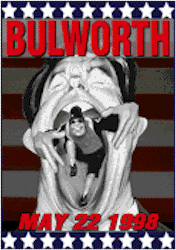
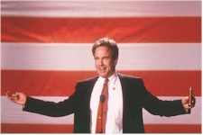

Contents | Features | Reviews | News | Archives | Store |
 |
|
| Movie Credits | Buy It! |
Bulworth
Review by Carrie
Gorringe
Posted 22 May 1998
|  | Directed by Warren Beatty Starring
Warren Beatty, Halle Berry, Screenplay by Warren Beatty and Jeremy Pisker |
It is the eve of the 1996 California primary and a slow pan over the environs of a well-appointed Senate office reveals the trappings of a long political life spent in well-meaning good works. We see a young Senator Jay Bulworth (Beatty) pictured with Bobby Kennedy and other notable liberal luminaries, then a tape of the contemporary Senator mouthing the latest neo-con homilies about work, not welfare and the importance of family values, then a close-up of the Senator at his desk, slowly losing his grip on sanity. The good Senator, disillusioned by the hypocrisy of his meaningless life and his opportunistic abandonment of his traditional values and caught in a professional, loveless marriage to ice-maiden Constance (Baranski), has decided to end it all. He accepts the bribe of a ten-million dollar insurance policy from an industry political operative (Sorvino), sets up a hit on his life and goes off to offend various political interest groups, from Jews to African-Americans, by committing not adultery, but the worst sin of all in politics: subjecting the already-committed to a dose of unfettered, unfiltered honesty.
While in a church in South Central, Bulworth falls under the spell of the beautiful Nina (Berry). She introduces him to the local night life. After a wild session of nightclubbing, Bulworth has come to two conclusions. First of all, he regains his will to live and wants the contract with the hitman cancelled. Second, Bulworth, at a morning-after-the-fact campaign stop at the Beverly Wilshire, stuns everyone by utilizing the language of rap to announce his new, confrontational style (at least, everyone thinks it’s rap, or an unreasonable facsimile thereof). Unfortunately for and unbeknownst to him, Nina is the hitwoman sent to eliminate his sorry ass, if she can only get the right setup. His companion in self-rediscovery just might be the last thing that will ever happen to him.
Like Bulworth the man, Bulworth the movie is a study in contradictions. Its timing is propitious, coming as it does nearly thirty years exactly after the last liberal Great White Hope, Bobby Kennedy, found himself on the wrong end of Sirhan Sirhan’s gun. In interviews, particularly the oft-quoted one conducted with Henry Louis Gates, Jr., in The New Yorker, Beatty has made all too clear his ambitions for this, his first directorial effort in seventeen years (since Reds in 1981). Beatty decries the decline of liberalism into opportunism with a human face, as it grew increasingly ineffective under the onslaught of 1970s inflation, 1980s Reaganism and 1990s polarization between rich and poor. Bulworth is, at its base, a tacit apology from one of those well-connected liberals for permitting the depredations of the past thirty years to assault the inner city without anyone coming to its occupants’ defense (the photograph of Bulworth and Bobby Kennedy is no photo-montage generated in a computer; the younger Beatty was indeed a Kennedy supporter). But, again, Beatty, courtesy of his star persona, has benefited as much as anyone from those financially predatory forces, so his cries of outrage ring more than a little hollow.
Nevertheless, skirting a fine line between apology and apologia is the least of the problems besieging Bulworth. It commits the worst sin of all for a topical film: inadvertently promoting irrelevance under the guise of relevancy. When Beatty first proposed the idea for making this film some seven years ago, the concept of rap as an "artistic" forum for airing the grievances of the dispossessed had some currency, despite the genre’s chronic misogyny and threats of violence . Now, however, as Gates has pointed out, rap has since become subsumed into the very corporate culture that Bulworth claims to despise; its force has been diffused and its legitimacy spent. Beatty’s role as a rapping Cassandra is more embarrassing than timely; he may think he has his finger on the pulse of the inner cities, but its veins are in the terminal stages of arteriosclerosis (paraphrasing Mark Twain’s definition of a fanatic, this is one of the disadvantages of pursuing one’s ambitions after the aim has long since been forgotten; it doesn’t help matters when one is sixty-one years old). Even the brightest aspect of Beatty’s performance – his hilarious, spot-on stint as a white-bread homeboy – has its force undercut by the surrounding illogic. Amiri Baraka’s presence as a commentator exhorting Bulworth to act as a spirit and not merely as a ghost is telling, though not in the metaphorical sense intended. Like the spirit, Bulworth is nakedly transparent in its aims, in spite of itself.
Contents | Features | Reviews | News | Archives | Store
Copyright © 1999 by Nitrate Productions, Inc. All Rights Reserved.